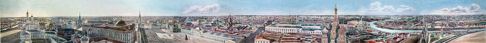
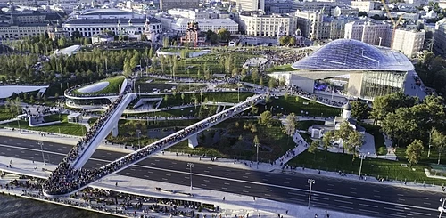

История
Москва- столица княжества
Во второй половине XIII века при князе Данииле Александровиче (младшем
сыне Александра Невского) Москва стала центром самостоятельного удельного
княжества. Расположение города на пересечении торговых путей
способствовало его росту и возвышению. В начале XIV века владения Москвы
расширились, к ним были присоединены Коломенское и Можайское княжества. В
XIV веке происходит дальнейшее возвышение Москвы в качестве нового
общерусского центра. Начиная с Юрия Даниловича московские князья носили
титул Великий князь Владимирский, считавшийся верховным в пределах
Северо-Восточной Руси и Новгорода. В 1325 году в Москву была перенесена
резиденция митрополитов, а в 1589 году была учреждена Московская
патриархия. При князе Иване I Даниловиче Калите в Москве развернулось
масштабное строительство, появились первые каменные здания (до той поры
город был полностью деревянным). В XIV — начале XV века Москва была
крупным торговым и ремесленным городом; в её состав входили территории
Кремля, Китай-города, и слобод в Замоскворечье, Занеглименье и Заяузье.
Русское царство Столица единого русского государства В конце XV века при
князе Иване III Васильевиче Москва становится столицей Русского
государства. Новый статус способствовал росту города и становлению
экономическим и культурным центром страны. Развивалась промышленность и
ремёсла: производство оружия, тканей, кожевенных, гончарных, ювелирных
изделий, строительное дело. Появились Пушечный и Печатный дворы. Больших
высот достигла московская архитектура. Границы Москвы значительно
расширились — к концу XVI века в её состав вошли территории Белого города
и Земляного города. Была создана система оборонительных сооружений. В
XIV—XVIII веках в Москве несколько раз происходили крупные восстания и
пожары. В 1565 году после разделения царём Иваном Грозным Русского
государства на опричнину и земщину город стал центром последней В период
Смутного времени В 1605 году в Москву вступили войска самозваного царя
Лжедмитрия I. Власть самозванца в городе пала в 1606 году, в ходе
народного восстания он был убит жителями Москвы. С 1608 по 1610 год в
правление нового выбранного царя Василия Шуйского Москва находится в осаде
войск второго самозванца Лжедмитрия II, обосновавшегося лагерем в Тушине.
В этот период сообщение Москвы с остальной частью государства было
затруднено. Осада была снята подходом к Москве со стороны Новгорода, в
марте 1610 года, войск Михаила Скопина-Шуйского со шведскими наёмниками. В
1610 году после поражения войск Василия Шуйского, в Клушинской битве,
Москву заняли польские войска Станислава Жолкевского. Попытки в 1611 году
освободить город от поляков Первым земским ополчением, под руководством
Прокопия Ляпунова, Ивана Заруцкого и князя Дмитрия Трубецкого, не
увенчались успехом. В 1612 году войска Второго земского ополчения, во
главе с земским старостой Кузьмой Мининым и князем Дмитрием Пожарским,
вышли из Нижнего Новгорода и 4 ноября, в битве на Девичьем поле, разбили
польские войска. Освободили Москву от поляков, вынудив в конце 1612 года,
их гарнизон капитулировать в Кремле и покинуть Москву. В первое столетие
правления династии Романовых В Москве в 1613 году был помазан на царство
Михаил Фёдорович, положивший начало более чем 300-летнему правлению
династии Романовых. В XVII веке в черту Москвы окончательно входит
Земляной город, достраивается и приобретает современный вид Московский
Кремль. Появились Ямская, Мещанская и Немецкая слобода. Приобретает
большое значение царская резиденция Коломенское. В 1654 году при
Аптекарском приказе организовано обучение «учеников лекарского дела».
Середина и вторая половина XVII века ознаменовалась в Москве рядом
социальных и политических бунтов: соляным, медным, стрелецкими 1682 года и
1698 года

Российская империя
В 1712 году столица России была переведена в Санкт-Петербург. В 1728 при
Петре II в Москву был перенесён императорский двор, который находился
здесь до 1732 года, когда Анна Иоанновна вернула его обратно в
Санкт-Петербург. Москва сохранила статус «первопрестольной» столицы и была
местом коронации императоров. Данный титул применяется для подчёркивания
исторического старшинства Москвы как города, в котором впервые появился
престол русского царя. В словаре Ф. А. Брокгауза и И. А. Ефрона Москва
называется «первопрестольной столицей России». Толковый словарь С. И.
Ожегова и Н. Ю. Шведовой трактует слово «первопрестольный» как обозначение
старейшей столицы. Термин широко применяется в настоящее время во всех
сферах общественной жизни как синоним и неофициальное название Москвы. В
1755 году Михаилом Ломоносовым и Иваном Шуваловым по приказу императрицы
Елизаветы основан Московский университет. Во время Отечественной войны
1812 года Москва оказалась захвачена войсками Наполеона и сильно
пострадала от пожара. По разным оценкам, в результате московского пожара
сгорело до 80 % зданий. Процесс восстановления Москвы длился более
тридцати лет, был построен Храм Христа Спасителя. К концу XIX века в
Москве появился трамвай. В 1851 году было открыто железнодорожное
сообщение Москвы с Санкт-Петербургом. В 1896 году в ходе мероприятий,
приуроченных к коронации императора Николая II, на Ходынском Поле
произошла крупная давка со значительным количеством жертв, получившая
название «Ходынская трагедия». В декабре 1905 года в Москве произошли
революционные волнения и уличные баррикадные бои.
Гражданская война
В середине августа 1917 года в Москве проходило Всероссийское
государственное совещание, созванное Временным правительством. 25 октября
1917 года, одновременно с началом Штурма Зимнего дворца в Петрограде,
началось московское вооружённое восстание большевиков, которому, в отличие
от восстания в Петрограде, в Москве было оказано упорное сопротивление.
Противники восстания, среди которых преобладали юнкера московских военных
училищ, объединились в комитет общественной безопасности и заняли Кремль,
чтобы противодействовать нападающим. Противостояние завершилось
кровопролитными боями между юнкерами и красногвардейцами, которые
продолжались в городе с 25 октября по 2 ноября 1917 года и привели к
повреждениям исторического центра Москвы и Кремля стрельбой артиллерии. В
1918 году в Москву из Петрограда переезжает правительство большевиков и
Москва становится столицей РСФСР. В начале второй половины 1919 года
антибольшевистские организации Москвы, руководимые Национальным центром,
осуществляют попытки организовать восстание в городе с целью свержения
советской власти, которые терпят неудачу. Многие члены подпольных
антисоветских организаций Москвы расстреляны органами ВЧК в ходе
мероприятий Красного террора. В рамках своего похода на Москву ВСЮР в
октябре 1919 года приблизились к Москве на 280 км (Мценск). Большевики
готовились в переходу на нелегальное положение и начали эвакуацию в
Вологду, однако их ударной группе удалось нанести белым удачный контрудар
под Орлом.
Советский период
С победой большевиков в 1920 году в Гражданской войне, началась новая,
советская эпоха в развитии города. В советское время Москва вновь стала
центром государства, увеличилось международное политическое значение
города. Москва застраивалась быстрыми темпами, к городу присоединялись
бывшие пригороды. В то же время историческая застройка центра города
подверглась выборочному уничтожению; был разрушен ряд храмов и монастырей,
в числе которых были Храм Христа Спасителя, Страстной монастырь. В 1922
году Москва стала столицей СССР. В городе началось быстрое развитие
транспортной инфраструктуры. Так, в 1924 году в Москве открылось
автобусное движение, в 1933 году был запущен первый троллейбусный маршрут,
а в 1935 году для пассажиров открылась первая линия метрополитена. После
введения в эксплуатацию Канала имени Москвы и поднятия уровня воды в
Москве-реке, часть городской территории возле Москвы-реки оказалось
затопленной. В частности, под воду ушли участки бывшего Дорогомиловского и
примыкающего к нему Еврейского кладбищ. Постановлением Президиума ВЦИК «Об
образовании на территории РСФСР административно-территориальных
объединений краевого и областного значения» от 14 января 1929 года с 1
октября 1929 года была образована Центрально-промышленная область с
центром в городе Москве. В 1931 году два крупных города РСФСР — Москва (16
июня) и Ленинград (3 декабря) — были выделены в отдельные административные
единицы — города республиканского подчинения РСФСР. В годы
индустриализации в Москве быстрыми темпами развивается сеть высших и
средних технических учебных заведений. В тридцатые годы в Москве была
создана целая сеть научно-исследовательских и проектных институтов
технического профиля. Подавляющее большинство из них входило в систему
Академии наук СССР. В это время в городе также развиваются средства
массовой информации, издаётся много газет, с 1939 года организовано
регулярное телевизионное вещание. Во время Великой Отечественной войны в
городе располагались ГКО и генеральный штаб РККА, было сформировано
народное ополчение (свыше 160 тысяч человек). Зимой 1941/42 годов
произошла знаменитая битва под Москвой, в которой советские войска
одержали первую крупную победу над вермахтом с момента начала Второй
мировой войны. В октябре 1941 года немецкие войска подступили вплотную к
Москве; многие промышленные предприятия были эвакуированы, началась
эвакуация правительственных учреждений в Куйбышев. 20 октября 1941 года в
Москве было введено осадное положение. Но, несмотря на это, 7 ноября на
Красной площади состоялся военный парад, войска с которого отправлялись
прямо на фронт. В декабре 1941 года наступление немецкой группы армий
«Центр» под Москвой было остановлено; в результате успешного
контрнаступления советских войск под Москвой немецкие войска были
отброшены от столицы. 24 июня 1945 года на Красной площади состоялся Парад
Победы. В 1952—1957 годах было проведено строительство высотных зданий,
впоследствии получивших название «Сталинских высоток» и ставших одним из
символов Москвы советской эпохи. В 1960 году сформировалась новая граница
Москвы по МКАД, за которую город стал выходить только в 1984 году. В конце
1960-х — начале 1970-х годов центр города вновь подвергся серьёзной
перестройке. Ради расширения существующих улиц, строительства новых
магистралей и типовых многоэтажных панельных домов были снесены некоторые
архитектурные памятники Москвы. В 1957 и 1985 годах в Москве прошли
соответственно VI и XII по счёту Всемирные фестивали молодёжи и студентов.
В 1980 году Москва принимала XXII летние Олимпийские игры.
Культура и искуство
Москва — крупный культурный и туристический центр Европы и мира,
московский регион имеет один из богатейших в России историко-культурных
потенциалов. В Москве много интересных мест — это как различные
историко-культурные и архитектурные памятники, так и современная
развлекательная инфраструктура. Современная Москва насчитывает более 100
театров. Наиболее известные из них — Большой театр, Малый театр, МХТ
им. Чехова, «Современник», Ленком, Театр на Таганке, Театр Петра Фоменко.
В городе имеется более 60 музеев. При участии Московского
государственного университета в Москве были открыты Политехнический,
Исторический, Зоологический музеи, музей антропологии, музей
изобразительных искусств имени А. С. Пушкина, Ботанический и Зоологический
сады (Московский зоопарк). Среди множества музеев столицы также следует
отметить Третьяковскую галерею, основанную русским меценатом, чьё имя
навсегда запечатлено в названии музея. Имеются крупные выставочные
пространства (Центральный дом художника, выставочный зал «Манеж» и др.).
Помимо государственных музеев в Москве действует множество частных
художественных галерей, многие из которых специализируются на современном
искусстве. В Москве работает несколько крупных сетей кинотеатров (в общей
сложности более 100 кинозалов), в прокате которых имеются российские
и зарубежные кинофильмы. Многие кинотеатры представляют собой
мультикомплексы, позволяющие одновременно показывать несколько фильмов на
разных экранах. В Москве расположены многие крупные киностудии:
«Мосфильм», Киностудия имени М. Горького, «Союзмультфильм» и другие.
Ежегодно проходит Московский международный кинофестиваль. В городе
действует более 400 библиотек, включая национальную Российскую
государственную библиотеку. В Москве расположено много различных ночных
заведений — клубов, баров, ресторанов, варьете. Например, по данным сайта
«Афиша», в столице насчитывается не менее 400 клубов. Основные
заведения концентрируются внутри Бульварного кольца, вдоль Тверской улицы,
в районе Остоженки, Нового Арбата, Кутузовского проспекта и других.
Примыкающий к Тверской Театральный проезд в районе Китай-города — место
расположения большого числа бутиков. До 1 июля 2009 года (даты
вступления в силу законодательства об ограничении игорного бизнеса) в
Москве работало большое число казино, игровых клубов. В Москве масса
возможностей для детского досуга. Самые известные места, которые москвичи
и гости столицы посещают с детьми — Московский зоопарк, Московский
планетарий, музей занимательных наук Экспериментаниум, Биологический
музей имени К. А. Тимирязева. В 2015 году на территории ВДНХ был открыт
океанариум «Москвариум». В Нагатинской пойме совместно с компанией
DreamWorks строится новый парк развлечений мирового уровня «Остров
мечты». В последнее время ведётся модернизация и реконструкция
московских парков, они становятся более удобными для прогулок с детьми за
счёт развитой инфраструктуры. Во многих парках работает прокат велосипедов
и роликов. Также в 2015 году в рамках программы благоустройства в Москве
было отремонтировано более 12 тысяч детских площадок.

 Москва
Москва